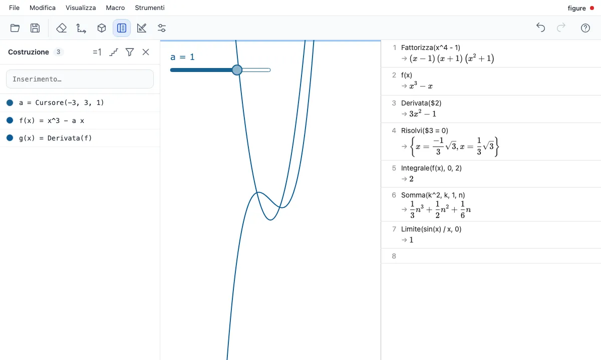

Il calcolo simbolico
DocGeo calcola valori esatti con Giac, il motore di calcolo simbolico di Xcas e di GeoGebra: derivate, primitive, fattorizzazioni, equazioni, limiti, somme, nelle formule della figura come in una vista di calcolo simbolico. Trova anche l’equazione di un luogo e dimostra proprietà geometriche.

Giac viene caricato la prima volta che un calcolo lo richiede, mai per una figura che non ne ha bisogno. Le ultime risposte sono salvate nella figura: si apre e si visualizza senza aspettare Giac, anche offline. Se Giac non può essere caricato, in basso a sinistra compare «⚠ Giac»: le risposte già note restano visualizzate, le altre sono indefinite.
I comandi di calcolo simbolico
Si usano in qualsiasi formula, come una funzione. Un’espressione la cui formula è solo uno di questi comandi mostra la risposta di Giac invece della sua formula.
| Comando | Risultato |
|---|---|
Derivata(f),
Derivata(e, v),
Derivata(e, v, n)
|
derivata, derivata n-esima rispetto a v |
Integrale(e),
Integrale(e, v)
|
primitiva |
Integrale(x^2, 0, a),
Integrale(e, v, a, b)
|
integrale da a a b, valore esatto |
Fattorizza(e) |
fattorizzazione sui razionali:
x^2 - 2 resta invariato
|
FattorizzaI(e) |
fattorizzazione con i radicali: (x − √2)(x + √2) |
Sviluppa(e),
Semplifica(e)
|
forma sviluppata, forma semplificata |
Risolvi(x^2 = 2),
Risolvi(e, v)
|
lista ordinata delle soluzioni reali di un’equazione, o di un’espressione nulla |
RisolviC(e) |
soluzioni complesse |
Somma(e, k, a, b) |
somma degli e per k intero da a a b |
Limite(e, a),
Limite(e, v, a)
|
limite in a, che può essere ∞ |
PolinomioTaylor(e, a, n),
PolinomioTaylor(e, v, a, n)
|
polinomio di Taylor di ordine n in a |
La variabile v è x, y, z o t, per impostazione predefinita la
prima che l’espressione legge. Una funzione della figura si
scrive con il suo nome: g(x) = Derivata(f).
-
Un cursore resta un simbolo per Giac:
Fattorizza(x^2 - a)mostra x² − a anche quando a vale 4. Spostare il cursore non chiede quindi nulla a Giac: la risposta viene solo rivalutata, durante il movimento. -
Eccezioni: l’ordine n di un polinomio di Taylor e gli
estremi di una somma senza forma semplice (
Somma(1/k, k, 1, n)) sono letti tramite il loro valore: un cursore dà una risposta per ogni valore intero. -
Integrale(f, a, b), dove f è il nome di una funzione, resta il comando che disegna l’area;Integrale(x^2, 0, 1)oIntegrale(e, v, a, b)calcola il valore esatto. - Finché la risposta non arriva, l’oggetto conserva il suo ultimo valore. Una risposta che DocGeo non sa leggere rende l’oggetto indefinito. Una derivata viene calcolata da DocGeo in attesa di Giac.
La vista CAS
Come quella di GeoGebra: righe di calcolo numerate, accanto alla figura o in una scheda propria.
| Azione | Come |
|---|---|
| Aggiungere la vista | File › Vista › Nuova vista CAS (una per figura), oppure File › Nuova scheda CAS («CAS1», «CAS2»…) |
| Calcolare una riga | scrivere nell’ultima riga, vuota, poi Invio: compare la risposta e una nuova riga attende |
| Modificare una riga | farvi clic, poi Invio; Esc ripristina il testo precedente, ↑ e ↓ passano da una riga all’altra |
| Eliminare una riga | svuotarla, poi Invio: i numeri seguenti scalano |
| Eliminare la vista | File › Vista › Elimina la vista CAS |
Ogni modifica si annulla con Annulla. Una riga incomprensibile viene rifiutata, in rosso.
Scrivere una riga
-
Una riga è una formula, con o senza comando:
sqrt(12) - sqrt(3)dà √3,Fattorizza(x^4 - 1)la sua fattorizzazione. -
$2è la risposta della riga 2. Quando una riga viene eliminata, i$nvengono rinumerati, e un riferimento alla riga eliminata viene sostituito dalla sua formula. -
b := 3eh(x) := x^2 + 1definiscono un numero o una funzione per le righe seguenti. -
Gli oggetti della figura sono letti con il loro valore
attuale: con a = 2,
a^2dà 4. Quando vengono spostati, le righe che li leggono vengono ricalcolate. Una lettera che non è un oggetto è una variabile libera:b^2resta b². -
pielnsi scrivono come in GeoGebra,∞ancheinf. Gli angoli sono sempre in radianti, anche in una figura in gradi. -
Numerico(e),Numerico(e, n)danno un valore approssimato (con n cifre);MantieniInserimento(e)mostra e così com’è, senza calcolo. Una riga tra virgolette,"Calcolo esatto", è un semplice testo. -
?sostituisce una risposta che Giac non dà o che DocGeo non sa leggere.
Indicare con il mouse
Mentre si scrive una riga già iniziata, un clic su un oggetto
della figura ne scrive il nome; un clic su un’altra riga ne
scrive il $n. Su una riga vuota, la figura risponde
come al solito.
Definire un oggetto della figura
Una definizione che legge solo oggetti della figura crea anche
l’oggetto, con la sua riga nella Costruzione:
m(x) := x^2 + a disegna la funzione m. Una
definizione che legge una variabile libera, un $n o
un nome definito solo nella vista (n := b^2) resta
propria della vista.
Nel lettore, le righe sono mostrate nella lingua del browser.
Curve algebriche
Un’equazione di grado qualsiasi, o non polinomiale, scritta
nella Costruzione è una curva:
f = x^3 + y^3 = 3x y (il folium di Cartesio),
c = sin(x) = y. È disegnata dove attraversa la
finestra e segue la finestra quando la si sposta; vi si possono
porre punti e intersecarla con altri oggetti.
| Comando | Risultato |
|---|---|
EquazioneLuogo(M, P) |
la curva intera descritta dal punto M quando il punto su oggetto P percorre il suo oggetto |
Inviluppo(d, P) |
la curva intera tangente alle posizioni della retta d quando P percorre il suo oggetto |
Come in GeoGebra, è l’equazione intera, con tutti i suoi rami, e
non solo la parte percorsa: EquazioneLuogo di un
punto che percorre un segmento dà la retta. In attesa di Giac, o
per una costruzione che non traduce (macro, bisettrici,
circonferenza inscritta, cursore come motore, spazio), è il
luogo percorso di Luogo.
Dimostrare
Sei predicati, i cui argomenti sono nomi di oggetti, dicono se
una proprietà vale nella figura così com’è: true o
false.
| Predicato | Vero se |
|---|---|
TestAllineamento(A, B, C) |
i tre punti sono allineati |
TestParallelismo(d, e),
TestPerpendicolarità(d, e)
|
le rette, i segmenti o le semirette sono paralleli, perpendicolari |
TestConciclici(A, B, C, D) |
i quattro punti stanno su una stessa circonferenza (o una stessa retta) |
TestIncidenza(d, e, f) |
le tre rette passano per uno stesso punto (o sono parallele) |
TestUguaglianza(a, b) |
due punti, rette o circonferenze coincidono; due segmenti hanno la stessa lunghezza; due numeri sono uguali |
Verifica(p), dove p è uno di questi predicati, dice
se è vero in generale: per tutte le posizioni dei punti
liberi e dei punti su oggetto, salvo casi degeneri. Con G =
Baricentro(A, B, C),
TestAllineamento(A, B, G) diventa vero quando si
pone C su (AB), ma
Verifica(TestAllineamento(A, B, G)) resta falso.
Giac traduce la costruzione in equazioni, come GeoGebra: la
risposta arriva al massimo in qualche secondo ed è salvata nella
figura.
-
Il calcolo riguarda tutte le intersezioni insieme: per
parlare della seconda intersezione di una retta e di una
circonferenza passanti per un punto A, costruirla con
AltraIntersezione(c, d, A). -
Verificaresta indefinito per una costruzione che non traduce (quelle di EquazioneLuogo, o un angolo, un rapporto o un raggio che non è una frazione semplice, come una rotazione di 60°), e nella vista CAS. -
Gli argomenti sono nomi: costruire e nominare prima le
rette,
Verifica(TestParallelismo(d, e)).
Figure GeoGebra
All’importazione vengono ripresi i comandi di calcolo simbolico
delle formule, le righe della vista CAS di GeoGebra, quelle
della sua Calcolatrice Suite, LocusEquation,
Envelope, Prove e i predicati. Una
cella che usa un comando che DocGeo non ha viene segnalata.